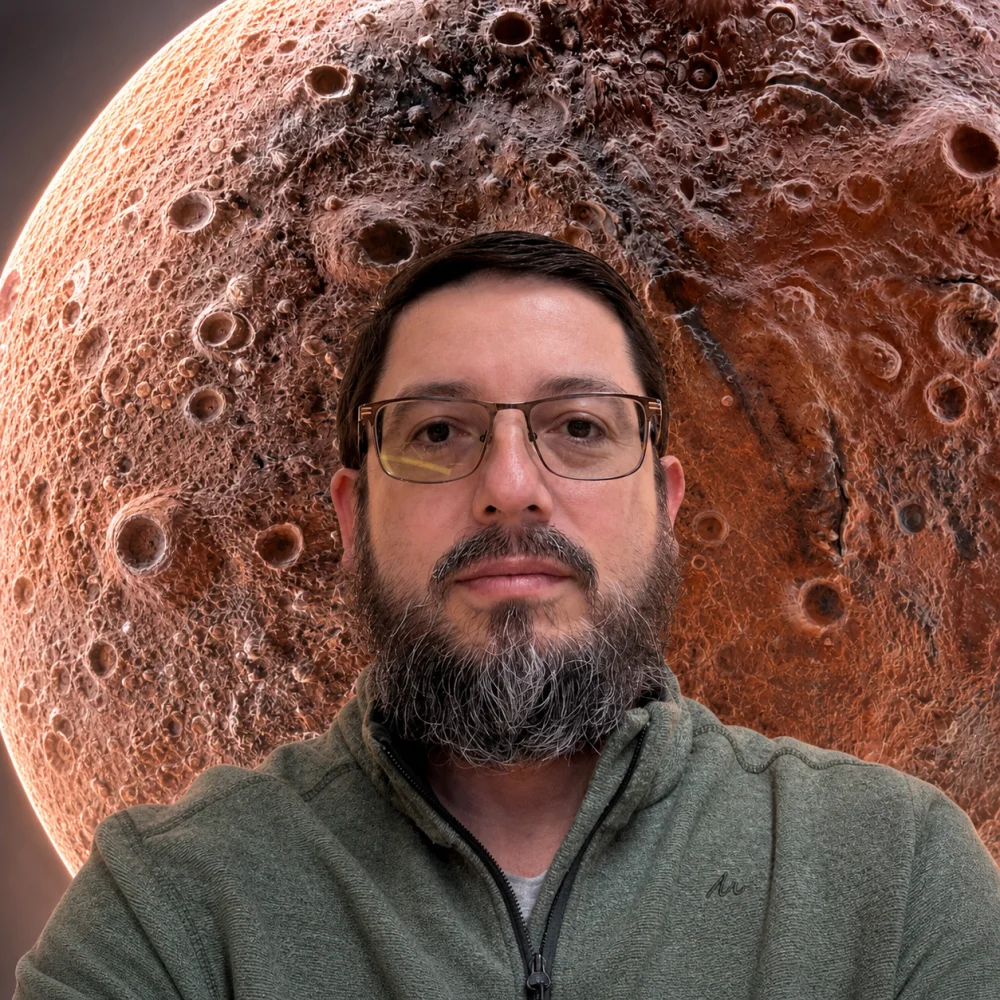

Años de experiencia profesional
Ph.D. · Ingeniería de computación y datos
Esteban Hernández
Arquitecto de software, investigador y líder en computación avanzada. Durante más de 22 años he conectado ingeniería industrial, investigación profunda e infraestructura de escala nacional en América Latina.

Perfil / 001Activo
Desplazar para explorarArquitectura · HPC · Datos · IA · Cuántica
Comunidades de software libre y datos abiertos
Ediciones de la Escuela HPC
Universidades colombianas integradas
01 / Trabajo seleccionado
Tecnología convertida en capacidad real.
Una selección de proyectos que conectan datos abiertos, ciencia aplicada, infraestructura computacional y construcción de comunidad.
rAIz · IA para el campo colombiano
Proyecto colaborativo para el Concurso Datos al Ecosistema 2026. Integra datos oficiales de datos.gov.co, IDEAM, IGAC y el Ministerio de Agricultura para pronosticar el rendimiento agrícola y apoyar decisiones de siembra mediante un modelo y un tablero reproducibles, trazables y escalables.
Datos oficiales · Modelo reproducibleExplorar ↗
Capacidad científica regional.
Creación y consolidación de una comunidad que conecta academia, industria y sector público mediante formación práctica en HPC, IA y computación cuántica.
9 escuelas · 10 universidadesVer impacto ↓
Infraestructuras para nuevas fronteras.
Organización de CARLA Weather y Quantum Day, divulgación pública y cooperación global para sostener datos climáticos e infraestructura científica abierta.
Cooperación · Soberanía tecnológicaVer impacto ↓
Código y formación abiertos
Recursos públicos para aprender, reproducir y extender ideas en computación avanzada.
02 / Perfil
De la investigación profunda al software industrial.
Soy ingeniero de computación y datos con experiencia en arquitectura de software, HPC, sistemas distribuidos, inteligencia artificial aplicada y software cuántico. Mi trabajo se centra en convertir investigación compleja en plataformas y capacidades que funcionan a escala, con participación activa en comunidades de software libre y datos abiertos.
HPC e infraestructura
Optimización de clústeres, paralelización GPU/CPU, AWS ParallelCluster, Slurm y ejecución científica de alto rendimiento.
Arquitectura de datos
Flujos distribuidos, lagos de datos, procesamiento en tiempo real y arquitecturas analíticas sobre GCP y AWS.
IA aplicada y software cuántico
LLM, IA generativa, visión por computador, Amazon Braket, IBM Quantum, Qiskit y Cirq integrados con flujos clásicos.
Liderazgo estratégico
Cooperación internacional, dirección técnica, gestión de equipos y comunicación con líderes ejecutivos y organizaciones multilaterales.
03 / Trayectoria profesional
Liderazgo técnico a escala regional y global.
Una trayectoria que combina estrategia, arquitectura y ejecución en centros de investigación, organizaciones regionales y compañías tecnológicas globales.
Cybercolombia
Fundador y director de cooperación científica
Dirección de la Escuela de Verano HPC, investigación en almacenamiento científico con Arrow, Ray, Dask y Spark, evaluación de aceleradores de IA y liderazgo de iniciativas cuánticas.
Ecosistema Urban AI
Consultor independiente
Integración de centros internacionales de investigación y evaluación de arquitecturas HPC/IA híbridas para el programa Bogotá Científica, incorporando computación cuántica en su visión futura.
SCALAC
Director ejecutivo
Estrategia regional para ampliar alianzas en HPC y ciencia abierta, cooperación internacional, educación en IA y optimización de infraestructura en América Latina y el Caribe.
Mercado Libre
Experto sénior
Diseño de flujos distribuidos de alto rendimiento con BigQuery, Dataform y Dataflow para entrega de datos submilisegundo y analítica de alta frecuencia.
Amazon Web Services
Arquitecto sénior de datos y analítica
Arquitectura de lagos de datos empresariales y soporte especializado a entidades públicas para ejecutar WRF y LAMMPS sobre AWS ParallelCluster.
PSL Corp · Perficient
Director de proyectos de datos
Dirección de equipos y productos de IA y datos, incluida una plataforma de transmisión de alto rendimiento capaz de procesar mil millones de eventos por segundo.
Experiencia fundacional
World Bank · UNDP · DIAN
Arquitectura técnica nacional, interoperabilidad, seguridad y transformación digital para la administración tributaria y aduanera de Colombia.
Globant
TechMaster para el estudio de Big Data y HPC, con investigación en aprendizaje automático e infraestructura de nube a gran escala.
RUNT · Sergio Arboleda
Arquitectura de alto rendimiento para transporte y tránsito, seguida de investigación aplicada en datos masivos para restitución de tierras.
04 / Impacto regional
Fundar una comunidad de práctica.
Como fundador y director de cooperación científica, he contribuido a convertir Cybercolombia en un puente entre academia, industria, sector público y aliados internacionales. El trabajo integra formación HPC, investigación de datos, aceleradores de IA y una nueva agenda de cooperación cuántica.
Conocer Cybercolombia ↗Cyber
Colombia
Colombia
Academia
Industria
HPC + IA
Cuántica
Fundación
Inicio de Cybercolombia como comunidad interdisciplinaria para HPC y computación científica.
Formación práctica
Primer taller HPC y creación de la Escuela Internacional de Verano.
Escala regional
Publicaciones, nueve ediciones de formación y articulación de diez universidades colombianas.
Próxima frontera
Urban AI, diagnóstico nacional HPC, CARLA Weather 2026 y activación de la Alianza Cuántica Colombiana.
Liderazgo científico
Convocar expertos para convertir conocimiento en capacidad regional.
Avances en pronóstico meteorológico
Organizador · Moderador estratégico
Primera edición latinoamericana y caribeña en Kingston. Articuló modelación WRF y MPAS-A, HPC e IA con expertos de WMO, ECMWF, NVIDIA, NSF NCAR, INPE y organismos meteorológicos regionales.
Ver iniciativa ↗Soberanía regional de pronóstico
Comité organizador · Córdoba
Segunda edición centrada en IA para pronóstico, cooperación Sur-Sur, modelos de nueva generación e infraestructura regional para reducir dependencias y fortalecer respuestas climáticas locales.
Ver iniciativa ↗De la conversación al acceso real
Organizador · Formación aplicada
Jornada práctica con Amazon Braket y Xanadu para explorar simuladores, QPU en la nube, PennyLane y flujos híbridos cuántico-clásicos, conectada con la novena Escuela de Verano HPC.
Ver iniciativa ↗05 / Investigación y academia
Conocimiento que se publica, se enseña y se aplica.
Profesor universitario desde 2011, Ph.D. Cum Laude e investigador en rendimiento, arquitecturas heterogéneas, pronóstico meteorológico y educación HPC.
Formación
Ph.D. en Ingeniería · Cum Laude
Universidad Distrital Francisco José de Caldas
M.Sc. en código abierto y rendimiento multinúcleo
Universitat Oberta de Catalunya
M.Sc. en sistemas de código abierto
Universidad Autónoma de Bucaramanga
Especialización en matemáticas aplicadas
Universidad Sergio Arboleda
Ingeniería en redes de computadores
Universidad Distrital Francisco José de Caldas
Beca Guadalupe por excelencia académica
Embajada de Francia
Publicaciones seleccionadas
Parallel Computing Strategies in WRF
El papel de MPI, OpenMP y la afinidad NUMA en cargas de pronóstico meteorológico.
Expanding Horizons
Avances de la educación HPC en Colombia mediante las escuelas de verano de Cybercolombia.
CyberColombia: A Regional Initiative
Un modelo regional para enseñar HPC y ciencias computacionales.
enerGyPU & enerGyPhi
Monitoreo de consumo energético y rendimiento en NVIDIA Tesla GPU e Intel Xeon Phi.
Lenguajes de programación paralela
OpenMPC, OmpSs, OpenACC y OpenMP sobre arquitecturas heterogéneas.
06 / Ideas
Pensar la infraestructura más allá de la tecnología.
Reflexiones sobre datos, instituciones, educación e infraestructura científica como capacidades que deben perdurar.
Building Enduring Data Institutions
Infrastructure Beyond Politics: una reflexión sobre cómo construir instituciones de datos que sobrevivan a los ciclos políticos y sostengan decisiones de largo plazo.
La soberanía también es computacional
Infraestructura, talento y conocimiento como condiciones para decidir con autonomía.
Idea por desarrollarEnseñar para crear ecosistemas
La formación técnica alcanza escala cuando conecta personas, instituciones y oportunidades.
Idea por desarrollar